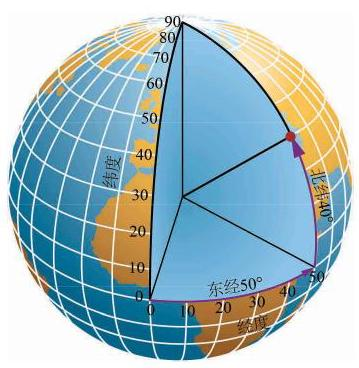

球是日常生活中最常见的几何体之一, 如足球、篮球、乒乓球等，其形状都是球体，如图 11-4-1 所示.

图 11-4-1
1 球

图 11-4-2

图 11-4-3
例题 1
例 1 如图 11-4-3,已知球的半径为 . 求小圆 的半径.
答案与解析收起 / 展开
解 在圆 上任意取点 . 因为点 在球面上,所以 . 又因为 垂直于平面 在平面 上,所以 . 于是,由勾股定理,得
根据已知条件, 有
例题 2
例 2 如图 11-4-4,设 是球 的一条直径,过球心 作一个大圆 与 垂直,过直径 上不同于点 的任一点 作与 垂直的平面,与球 交于小圆 ,过直径 作两个平面与球分别交于两个大圆 和 和 分别是这两个大圆的圆周与圆 的交点. 求证:

图 11-4-4
(1) 都是二面角 的平面角；
(2) 和 与平面 所成的角相等.
当以一点为圆心的圆不只一个时, 可以用表示圆心的字母后面跟着表示圆周上不在一条直径上的两个点的字母来表示所指的圆, 如本题的圆 . 这样的三点完全决定了圆所在的平面以及在平面上圆心位置和圆的大小.
答案与解析收起 / 展开
证明(1)由题设，大圆 及小圆 所在平面都垂直于 ,所以 ,即 都是二面角 的平面角.
(2)因为平面 和平面 都经过直线 ，而直线 垂直于平面 ,由平面与平面垂直的判定定理,知平面 和平面 都垂直于平面 ,所以直线 和 分别是斜线 和 在平面 上的射影,即 分别是斜线 和 与平面 所成的角. 因为 , 是公共边,所以 ,所以 . 由此得 ,即 和 与平面 所成的角相等.
由例 2, 我们可以对地球的经纬度进行数学解释. 首先我们把地球看作是一个球体. 如图 11-4-4,设直径 的端点分别是地球的北极点和南极点,大圆 是赤道所在的平面. 用平行于赤道平面的平面截地球得到的小圆 (如圆 ) 的圆周称为纬线, 按照南北方向分为南纬和北纬. 过 的大圆的半圆周 (如半圆 AFDB)称为经线. 按照约定, 通过英国伦敦格林尼治天文台原址的那条经线称为 0 度经线，从它开始，分别按照东西方向分为东经和西经. 地球上某点的纬度是该点和地心连线与赤道平面所成的角. 由例 2 , 知同一条纬线上的点的纬度都相同; 该点的经度是它所在的经线半圆与 0 度经线半圆所成二面角的度数. 例如,图 11-4-5 中,红点的方位就是 (东经 ,北纬 ).

图 11-4-5
练习 11.4(1)
练习11.4(1) · 1
- 如图 11-4-4, 为球心, 为小圆的圆心,用球的半径 和小圆的半径 表示 的距离 .
答案与解析收起 / 展开
练习11.4(1) · 2
- 已知半径为 的球面上三点 满足 ,球心到平面 的距离为 12. 求球的半径 .
答案与解析收起 / 展开
练习11.4(1) · 3
- 已知上海地处东经 至 ,北纬 至 之间,地球半径为 6371.004 km. 求上海所辖区域:
(1)经线对应的两平面所成的二面角的大小；
(2)纬线所在两平面的距离.
答案与解析收起 / 展开
2 球的体积
设有一个半径为 的球. 和柱体、锥体一样,我们也可以应用祖暅原理推导球的体积公式. 我们先只考虑半球, 即由球的一个大圆把球切成两部分中的一部分(图 11-4-6(1)). 作为对比的几何体,我们取底面半径为 、高为 的圆柱,并从中切去一个倒置的底面半径为 、高为 的圆锥 (圆锥的底面置于圆柱的上底面，圆锥的顶点置于圆柱下底面的圆心) (图 11-4-6(2)).

图 11-4-6
用平行于底面高度为 的平面截这两个几何体. 半球在大圆截口上方高度 处的截面是半径为 的圆,所以它的面积是 ; 容易看出右边几何体中被切掉的圆锥在高度 上的截面的半径是 ,所以右边几何体在高度 上的截面面积是 . 这两个截面面积相等,根据祖暅原理, 这两个几何体的体积相等, 即半球的体积为图 11-4-6(2) 中圆柱体积减去圆锥体积 .
由此可见, 球的体积是
例题 3
例 3 有一种空心钢球,质量为 ,测得球的外直径等于 . 求它的内直径. (钢的密度是 ,结果精确到 )
答案与解析收起 / 展开
解 设空心钢球的内直径为 ,那么钢球的质量是
,解得 .
答: 空心钢球的内直径约为 .
3 球的表面积
球的表面积就是球面的面积. 由球的定义可以看出, 球面是由一条半圆弧绕其直径旋转一周而成的曲面, 它不能像圆柱面、 圆锥面那样展开为平面图, 求它的面积就不能化为平面的问题.
实际上, 球面面积公式的严格推导或证明需要用到极限与微积分等工具, 本教材中无法完整给出. 作为替代, 本小节给出球面面积公式, 并描述一种证明的思路, 等同学们学了更多数学知识后, 就有可能对这种思路有更深的理解, 甚至可以自己把它补成严格的数学证明.
以 为半径的球面面积是

图 11-4-7
如图 11-4-7(1)所示，把球面剖分成许多小区域. 取其中一个区域, 把它近似地看成平面的三角形或多边形, 从而它与球心组成了一个侧棱是 的棱锥,当这个区域足够小时,棱锥的高也近似于 ,棱锥的体积 ,其中 为棱锥底面积 (图 11-4-7(2)). 当取遍剖分中的所有小区域时, 的总和近似于球面的面积 ,而 的总和近似于球的体积 ,于是我们得到球面面积与球的体积之间的关系
这个关系式与剖分过程无关. 可以想象, 当剖分做得越来越精细时, 推导过程中的“近似”越来越趋向于“精确”, 于是上述近似关系最终成为相等关系, 再把球的体积公式代入, 得到
整理即得球面面积公式.

图 11-4-8
例题 4
例 4 如图 11-4-8, 已知圆柱的底面直径与高都等于球的直径. 求证:
(1)球的表面积等于圆柱的侧面积；
(2)球的表面积等于圆柱表面积的 .
答案与解析收起 / 展开
证明 (1) 设球的半径为 ,则圆柱的底面半径为 ,高为 . 得
所以 .
(2)因为 ， 所以 .
练习 11.4(2)
练习11.4(2) · 1
- 已知地球的半径约为 ,计算地球的表面积. (结果精确到 )
答案与解析收起 / 展开
练习11.4(2) · 2
- 把一个半径为 的实心铁球熔化铸成两个小球,两个小球的半径之比为1 :2. 求其中较小球的半径.
答案与解析收起 / 展开
练习11.4(2) · 3
- 如图,有一个水平放置的透明无盖的正方体容器,容器高 ,将一个球放在容器口, 再向容器注水, 当球面恰好接触水面时, 测得水深为 . 若不计容器的厚度,求球的体积.

(第 3 题)
答案与解析收起 / 展开
习题 11.4
A 组
习题11.4A · 1
答案与解析收起 / 展开
习题11.4A · 2
- 若用与球心距离为 1 的平面截球体所得的圆面半径为 3 ，则球的体积为___.
答案与解析收起 / 展开
习题11.4A · 3
- 若平面 截球 所得圆的半径为 1,球的表面积是 ,则球心 到平面 的距离为___.
答案与解析收起 / 展开
习题11.4A · 4
- 已知两个球的表面积之差为 ,它们的大圆周长之和为 ,则这两个球的半径之差为___.
答案与解析收起 / 展开
习题11.4A · 5
- 已知正三角形 的三个顶点都在半径为 2 的球面上,球心 到平面 的距离为 是线段 的中点,过点 作球 的截面,则截面面积的最小值是___.
答案与解析收起 / 展开
B 组
习题11.4B · 1
- 已知过球面上 三点的截面和球心的距离等于球半径的一半,且 . 求截面的面积.
答案与解析收起 / 展开
习题11.4B · 2
- 已知三棱柱 的 6 个顶点都在球 的球面上,且 ， . 求球 的半径.
答案与解析收起 / 展开
习题11.4B · 3
- 如图为一个用鲜花做成的花柱,它的下面是一个直径为 、高为 的圆柱形物体, 上面是一个半球形体. 如果每平方米大约需要鲜花 120 朵, 那么装饰这个花柱大约需要多少朵鲜花?

(第 3 题)
答案与解析收起 / 展开
习题11.4B · 4
- 如图,半径为 的球 中有一内接圆柱,当圆柱的侧面积最大时,求球的表面积与该圆柱的侧面积之差.

(第 4 题)
答案与解析收起 / 展开